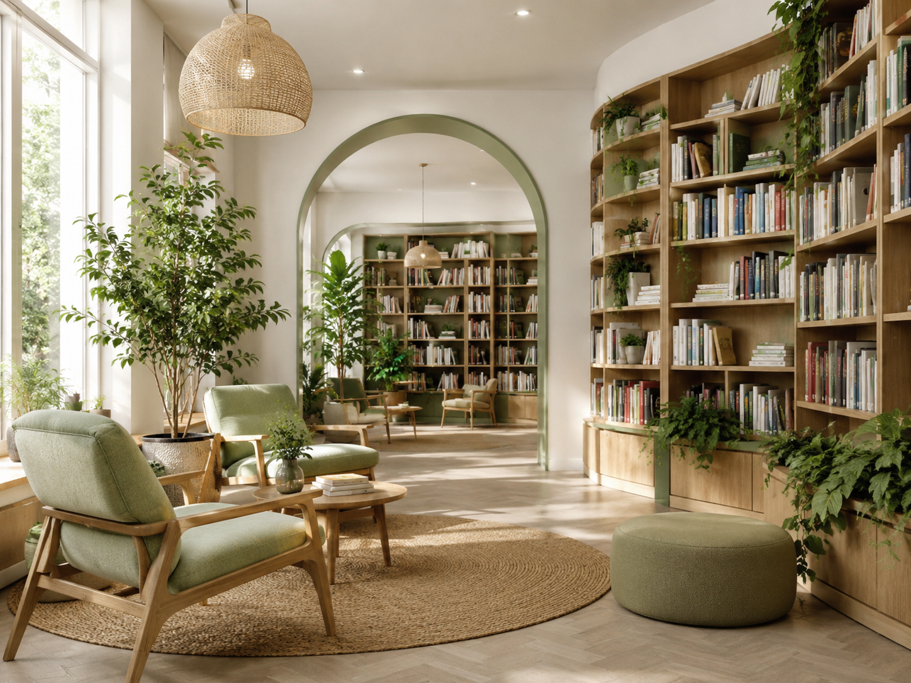

Идеи оформления библиотек
БиблиоДизайн
Сайт помогает выбрать стиль оформления библиотеки: от тихого читального зала до семейной зоны, молодёжного хаба или современной медиатеки.
Здесь можно посмотреть готовые варианты, изучить их описание, подобрать подходящий стиль под помещение и добавить собственную идею.

12+готовых стилей
6разделов сайта
∞свои идеи
Что можно сделать на сайте
Главная страница не перегружена: все функции вынесены в отдельные вкладки, чтобы посетителю было удобно выбирать нужное.
1
Посмотреть дизайны
Откройте каталог и сравните разные варианты оформления библиотек.
2
Изучить описание
У каждого дизайна есть аудитория, палитра, зоны, материалы и рекомендации.
3
Подобрать стиль
Ответьте на несколько вопросов и получите подходящие варианты.
4
Добавить свой
Сохраните собственную идею дизайна прямо в браузере.
Популярные варианты
Несколько примеров из каталога. Полный список находится во вкладке «Дизайны».